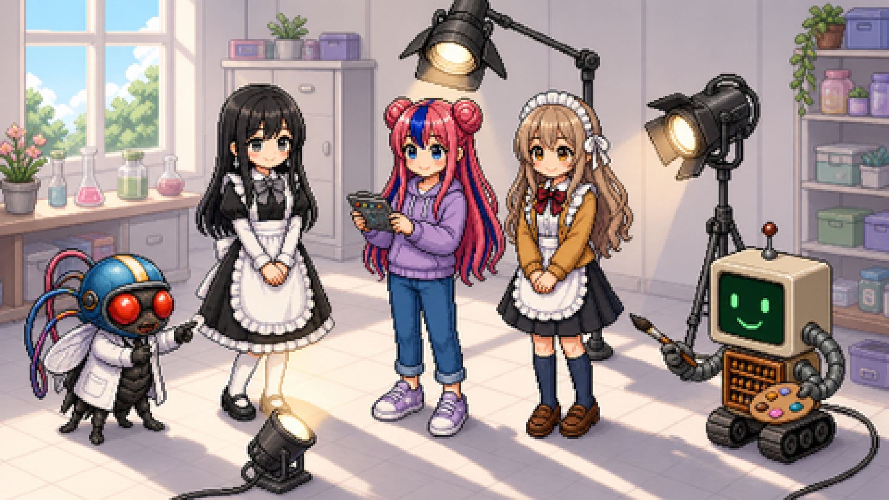
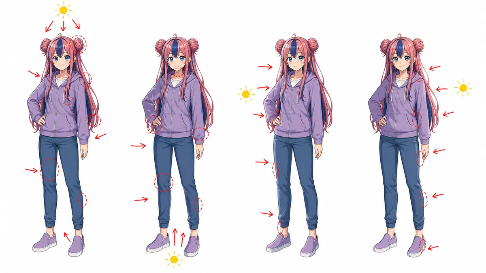
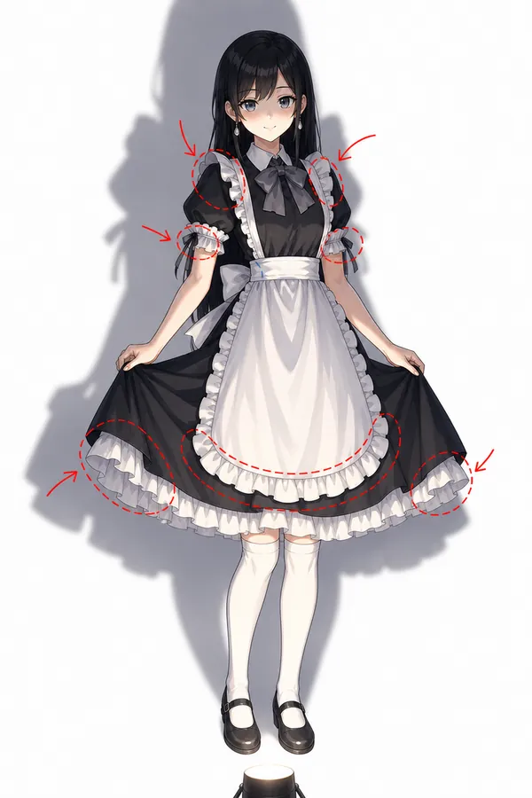
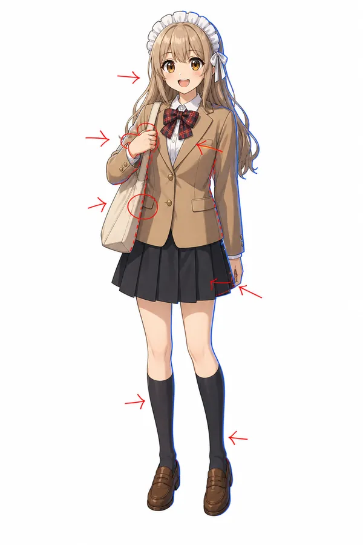
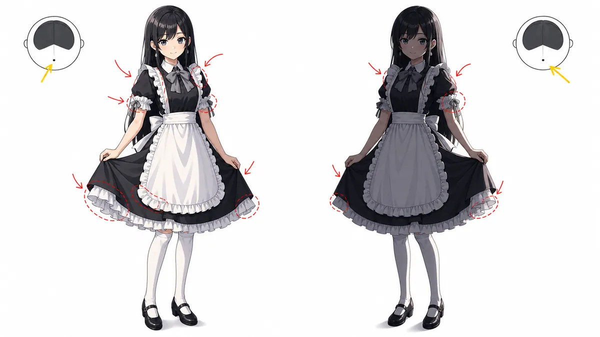
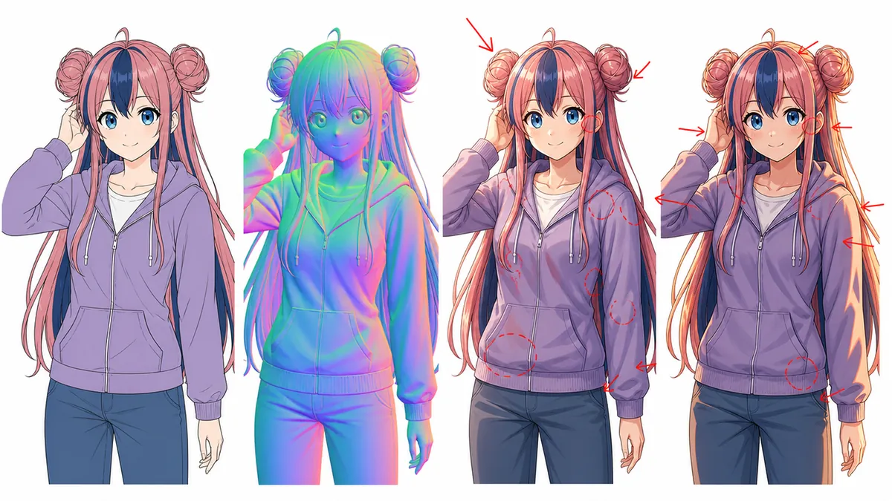
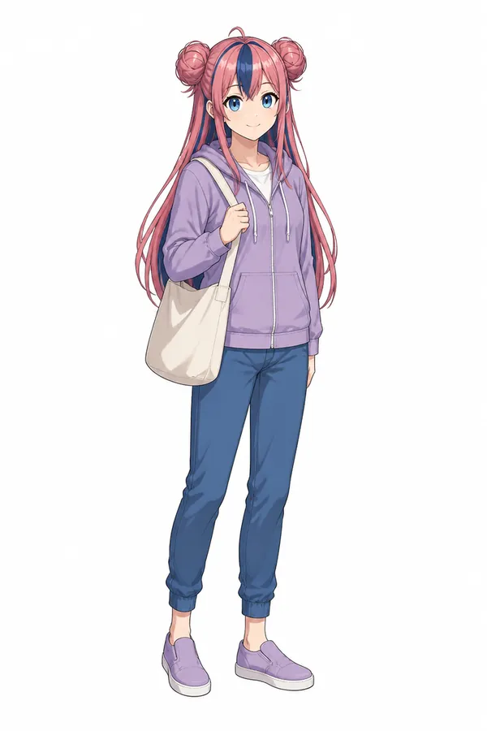
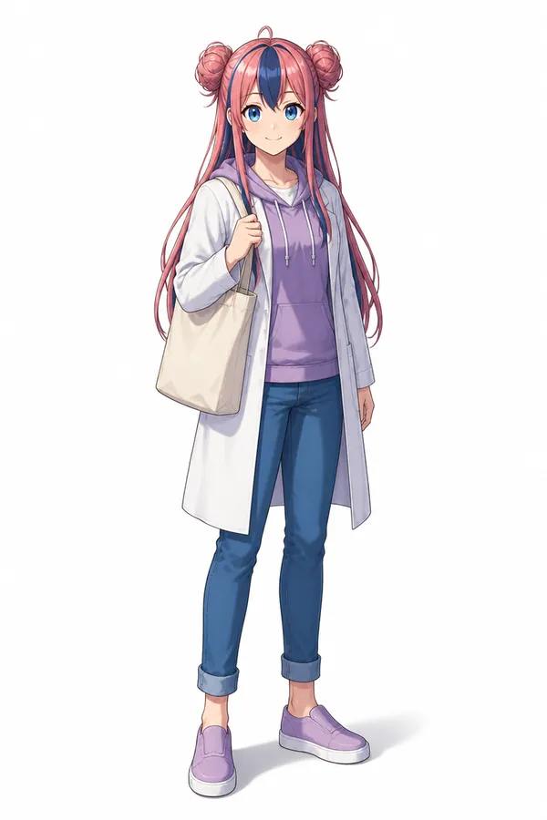

마지막 부의 모델은 하루·시아·모아 셋 모두입니다. 선화는 그대로 두고 광원만 바꿔, 그림자가 어떻게 옮겨 가는지 봅니다.
그림 실력·코드·수식을 몰라도 됩니다. 실험을 눌러 보며 따라오세요.
같은 선화라도 광원이 위·아래·왼쪽·오른쪽·뒤로 바뀌면, 그림자는 늘 빛의 반대쪽 면으로 옮겨 갑니다
아침에는 그림자가 서쪽으로, 저녁에는 동쪽으로 눕습니다. 해가 돌면 그림자는 반대쪽으로 돕니다.
3D 장면에서는 같은 모델에 조명만 바꿔 여러 컷을 뽑습니다. 손그림도 선화 한 장에 그림자 레이어만 바꿔 같은 일을 합니다.


광원이 '왼쪽'이면 몸의 오른쪽 면이, '오른쪽'이면 왼쪽 면이 어두워집니다.
'아래'면 평소 밝던 윗면(어깨 위)이 어둡고, 아랫면(팔 아래)이 밝습니다. '뒤'면 앞면 대부분이 그림자입니다.
작업에서는 선화는 하나로 두고 그림자 레이어만 광원별로 새로 칠합니다.

AI 그림에서 왼쪽 창문 빛을 받는 장면인데, 하루 얼굴의 왼쪽이 어둡습니다. 맞을까요?
빛이 왼쪽에서 오면 왼쪽 면이 밝고 오른쪽이 어두워야 합니다. 반대라면 배경과 인물의 광원이 맞지 않는 그림입니다.
광원이 낮으면 평소 어둡던 팔 아래·턱 아래가 밝아지고, 어깨 위·이마 위쪽이 어두워집니다
무대 바닥 조명을 받은 배우는 눈썹 아래가 밝고 이마 위쪽이 어둡습니다.
공포·긴장 장면이나 무대 장면에서 아래 조명을 씁니다. AI 그림에 아래 조명을 시키면 습관대로 위 조명 그림자가 섞여 나오는 일이 잦습니다.

광원 높이가 0보다 낮으면 아랫면(팔 아래·턱 아래)이 밝아지고 윗면(어깨 위)은 어두워집니다.
광원 높이 0 근처에서는 윗면과 아랫면 모두 빛을 스치듯 받아 어중간하게 어둡습니다.
작업에서는 아래 조명 장면이면 평소 칠하던 턱 아래·팔 아래 그림자를 지우고, 눈썹 위·코 위쪽에 그림자를 새로 넣습니다.

AI에게 '아래에서 비추는 조명'을 시켰는데, 시아의 턱 아래에 진한 그림자가 있습니다. 어떻게 볼까요?
아래 조명이면 턱 아래는 빛을 정면으로 받는 곳입니다. 위 조명 습관이 섞인 것이니, 그림자를 '눈썹 위·코 위쪽'으로 적어 다시 요청합니다.
광원이 옆이면 반대쪽 절반이 입체 그림자가 되고, 몸통 앞에 떠 있는 팔·가방이 몸통에 떨어지는 그림자를 드리웁니다

학교 수학으로 보면 — 삼각비(tan) — 옆으로 밀린 거리 ÷ 앞뒤 거리 = tan(각).
| 식 조각 | 뜻 |
|---|---|
| 팔~몸통 거리 | 팔이 몸통 앞에 떠 있는 거리 |
| 빛이 정면과 이루는 각 | 0°면 정면 조명, 90°면 바로 옆 조명 |
| tan | tan 45° = 1, tan 60° ≈ 1.73 |


옆에서 해가 비칠 때 사진을 찍으면 코가 볼에 그림자를 드리웁니다. 코가 볼보다 앞에 있기 때문입니다.
애니 채색 지시서에는 '몸통이 팔에 드리운 그림자', '가방이 몸에 드리운 그림자'처럼 그림자의 주인을 적습니다. 3D 렌더링에서는 '그림자 지도'라는 방법으로 이 가림을 계산합니다.
입체 그림자는 몸통의 빛 반대쪽 절반에 생깁니다. 이것만으로는 팔이 몸통에 붙었는지 떴는지 모릅니다.
팔이 몸통에서 떨어질수록, 빛이 옆으로 기울수록 팔 그림자가 팔에서 멀어집니다(5cm, 45°면 5cm).
작업에서는 팔·가방이 몸통 앞에 떠 있는 거리를 정하고, 그만큼 옆으로 밀린 그림자를 몸통에 그립니다.

AI 그림에서 옆 조명을 받는 모아의 팔이 몸통 앞에 있는데, 몸통에 팔 그림자가 전혀 없습니다. 어떻게 볼까요?
팔이 몸통에 딱 붙어 있지 않다면 옆 조명에서는 몸통 위에 팔 그림자가 생겨야 합니다. 없으면 팔이 몸 앞에 떠 있는 느낌이 약해집니다.
광원이 왼쪽 앞인지, 바로 옆인지, 왼쪽 뒤인지에 따라 보이는 몸의 밝은 폭이 크게 달라집니다
학교 수학으로 보면 — 삼각함수(cos)와 원 — 빛 받는 반원과 보이는 반원이 겹치는 부분을 화면에 펼친 폭입니다.
| 식 조각 | 뜻 |
|---|---|
| φ (파이) | 보는 사람 쪽 방향과 빛이 오는 방향 사이 각도(위에서 본 각) |
| cos φ | 0°면 1, 90°면 0, 180°면 −1 |
| ÷ 2 | 0~1 사이 비율로 맞춤 |
사진관에서는 조명을 모델의 비스듬한 앞쪽에 두어 얼굴의 4분의 3쯤을 밝힙니다. 조명을 옆으로 옮기면 얼굴 반쪽만 밝아집니다.
애니 작화 설정에는 위에서 본 작은 머리 그림에 광원 화살표를 그려 넣어, 여러 사람이 그려도 같은 그림자 넓이가 되게 맞춥니다.
φ = 90°(바로 옆)일 때만 정확히 절반이 밝습니다.
광원이 앞으로 오면(φ가 작아지면) 밝은 폭이 넓어지고, 뒤로 가면(φ가 커지면) 좁아집니다.
작업에서는 컷마다 위에서 본 머리 그림에 광원 화살표를 그려 φ를 정해 두면, 여러 장을 그려도 그림자 넓이가 일정합니다.

AI로 같은 장면을 여러 장 만들었더니 '왼쪽 빛'인데 장마다 그림자 넓이가 다릅니다. 무엇을 더 적어야 할까요?
왼쪽 앞인지, 바로 옆인지, 왼쪽 뒤인지 각도를 적어야 합니다. 예: '빛은 왼쪽 앞 45도 위에서, 얼굴 오른쪽 3분의 1만 그림자'.
면마다 향한 방향을 색으로 저장한 '노멀 지도'가 있으면, 선화를 다시 그리지 않고 광원만 바꿔 그림자를 새로 계산합니다
학교 수학으로 보면 — 벡터의 내적 — 길이가 1인 두 화살표의 내적은 사이 각도의 cos와 같습니다(기초편 2부의 cos θ).
| 식 조각 | 뜻 |
|---|---|
| (nx, ny, nz) | 면이 향한 방향. x는 오른쪽, y는 위, z는 보는 사람 쪽. 노멀 지도의 빨강·초록·파랑 |
| (lx, ly, lz) | 빛이 오는 방향 |
| max(0, …) | 음수면 0 — 빛을 등진 면은 그림자 |
사진 앱의 '조명 방향 바꾸기'나 화상회의의 얼굴 밝히기 기능도, 얼굴 면의 방향을 먼저 추정한 뒤 빛을 다시 계산합니다.
게임은 캐릭터 그림에 노멀 지도를 함께 두어 조명이 움직여도 그림자가 따라오게 합니다. AI 다시 조명 모델은 그림 한 장에서 이런 면 정보를 스스로 추정해 새 광원으로 다시 그립니다.

노멀 지도는 면이 오른쪽을 보면 빨강이, 위를 보면 초록이, 보는 사람 쪽을 보면 파랑이 강합니다.
광원 막대를 돌리면 노멀 지도는 그대로이고, 결과 그림의 그림자만 새로 계산됩니다.
작업에서는 3D 모형이나 AI 도구로 노멀 지도를 얻어 두면, 컷마다 조명이 달라도 그림자가 서로 어긋나지 않습니다.

AI 다시 조명 도구로 하루 그림의 빛을 왼쪽으로 바꿨더니, 그림자는 바뀌었는데 원래 오른쪽 위에서 오던 머리 하이라이트가 그대로 남았습니다. 무엇을 확인할까요?
원본에 그려져 있던 빛(하이라이트·그림자)이 다 지워졌는지 확인해야 합니다. 원래 빛이 남으면 광원이 두 개처럼 보이는 모순이 생깁니다. 그림자 없는 선화·밑색에서 다시 조명하는 편이 안전합니다.
각 실습은 이 페이지 그림을 실제로 만든 요청문(A)에서 출발해, 원리 하나만 바꾼 문장(B)을 같은 대화에 이어 붙입니다. A와 B를 나란히 놓고 무엇이 달라졌는지 확인하는 것이 목표입니다.
목표 — 2단계 '아래에서 오는 빛 — 평소와 반대'를 거꾸로 시험합니다. 아래 조명을 받은 시아의 광원만 머리 위로 옮겨, 밝은 면과 어두운 면이 위아래로 뒤집히는지 봅니다.
Character illustration, 2:3. High-quality anime illustration, clean confident lineart, two-tone cel shading with soft lavender-gray shadows, plain white background, natural proportions of young adults in their early twenties, modest outfit exactly as described. Character: Sia (match the attached reference p5_sia_anime exactly for face and hair): long straight jet-black hair reaching the waist with side-swept bangs, calm gray eyes, small silver drop earrings, no headdress. For this lesson a frillier knee-length variant of her charcoal-black maid dress: puffed short sleeves with white frilled armbands tied with thin ribbons, white high collar with a large soft gray bow, white frilled apron with ruffled shoulder straps and a waist tie bowed at the back, layered white petticoat ruffles at the hem, white over-knee socks, black strap shoes. Full body, lit by a single lamp on the floor in front of her (under-lighting): the underside of the chin, the underside of the arms and the underside of the apron are bright, while the tops of the shoulders, the top of the head and the area above the eyebrows are in shadow; her tall cast shadow rises on the wall behind her. Calm, slightly mysterious mood but still a bright white studio. Annotation marks drawn on top: only simple red hand-drawn arrows, red circles and red dashed lines — absolutely no words or numbers. No text, no letters, no numbers, no logos, no watermark, no revealing clothing, no exaggerated body proportions, not resembling any famous anime character, no pixel art.
Same image. Change only the lighting: remove the lamp on the floor and use one light source directly above her head. The tops of the head and shoulders become bright, the underside of the chin and the arms go into shadow, and her cast shadow falls on the floor at her feet instead of rising on the wall. Keep the same character, outfit, framing and art style. Still no text.
0 / 3
목표 — 4단계 '보이는 밝은 폭 = (1 + cos φ) ÷ 2'를 시험합니다. 오른쪽 바로 옆(φ = 90°, 밝은 폭 50%)에서 오던 빛을 왼쪽 앞 60°(밝은 폭 75%)로 옮깁니다.
Character illustration, 2:3. High-quality anime illustration, clean confident lineart, two-tone cel shading with soft lavender-gray shadows, plain white background, natural proportions of young adults in their early twenties, modest outfit exactly as described. Character: Moa (match the attached reference p5_moa_anime exactly for face and hair): long ash-beige hair with soft wavy ends and neat bangs, white frilled maid headband with a thin white ribbon over the LEFT ear, amber-brown eyes. For this lesson: camel wool blazer with two front buttons and flap pockets over a white shirt with a red and navy plaid bow tie, dark navy pleated skirt, dark navy knee socks, brown loafers. The blazer fabric is stiff. Full body, standing, a canvas shoulder bag on her left shoulder and her right forearm raised in front of her chest holding the strap, strong light from her right side. The left half of her body is in form shadow; her raised forearm and the bag cast shadows onto her torso that are shifted to the side. Outline the cast shadows in red and the form shadow edge in blue. Annotation marks drawn on top: only simple red hand-drawn arrows, red circles and red dashed lines — absolutely no words or numbers. No text, no letters, no numbers, no logos, no watermark, no revealing clothing, no exaggerated body proportions, not resembling any famous anime character, no pixel art.
Same image. Change only the lighting: one light source from her front-left at about 60 degrees seen from above, slightly high. About three quarters of her visible body is lit and only the far right quarter is in shadow; the raised forearm and the bag cast shadows onto her torso shifted to the right. Remove the red and blue outline marks. Keep the same character, outfit, framing and art style. Still no text.
0 / 3
anime girl, dramatic lighting, cinematic shadows, masterpiece
왼쪽은 주판봇식 요청문, 오른쪽은 위에서 조립한 요청문으로 Genspark에서 받은 첫 결과입니다. 고르지 않고 그대로 실었습니다.


배울 점
하나라도 '아니오'면 아래 고치기 문장을 쓰세요. 여러 곳을 한꺼번에 고치라고 하면 맞던 곳까지 바뀌기 쉽습니다.
Same character, same pose and style. Change only the lighting: one light source from {선택한 방향}; move every shadow to the opposite side. Still no text.Character illustration. High-quality anime illustration, clean confident lineart, two-tone cel shading with soft lavender-gray shadows, plain white background, natural proportions of young adults in their early twenties, modest outfit exactly as described. Character: Moa (match the attached reference p5_moa_anime exactly for face and hair): long ash-beige hair with soft wavy ends and neat bangs, white frilled maid headband with a thin white ribbon over the LEFT ear, amber-brown eyes. For this lesson: camel wool blazer with two front buttons and flap pockets over a white shirt with a red and navy plaid bow tie, dark navy pleated skirt, dark navy knee socks, brown loafers. The blazer fabric is stiff. Full body, standing, a canvas shoulder bag on her left shoulder and her right forearm raised in front of her chest holding the strap, strong light from her right side. The left half of her body is in form shadow; her raised forearm and the bag cast shadows onto her torso that are shifted to the side. Outline the cast shadows in red and the form shadow edge in blue. Annotation marks drawn on top: only simple red hand-drawn arrows, red circles and red dashed lines — absolutely no words or numbers. No text, no letters, no numbers, no logos, no watermark, no revealing clothing, no exaggerated body proportions, not resembling any famous anime character, no pixel art.
빨간 화살표·동그라미 지시(Annotation 줄)는 설명용 표시를 넣으려고 붙인 것입니다. 일반 그림에는 빼세요.

| 항목 | 주판봇 | 초파리 |
|---|---|---|
| 닮음(외형 고정값) | 8 | 8 |
| 입체감(광원별 그림자) | 4 | 9 |
| 자연스러움(빛 방향 일관성) | 2 | 9 |
| 합계 | 14 | 26 |


점수는 이야기 속 예시입니다. 실제 그림을 평가한 값이 아닙니다.
| 주제 | 핵심 | 작업에서는 |
|---|---|---|
| 방향 | 그림자는 빛의 반대쪽 | 선화 하나, 그림자 층만 새로 |
| 아래 빛 | 아랫면이 밝다 | 턱 아래 그림자 지우기 |
| 옆 빛 | 밀린 거리 = 거리 × tan | 팔·가방 그림자 넣기 |
| 각도 | 밝은 폭 = (1 + cos φ) ÷ 2 | 위에서 본 화살표로 정하기 |
| 다시 조명 | 밝기 = 면 · 빛(내적) | 노멀 지도로 빛만 바꾸기 |
이 페이지에 나온 개념·방법·비유·쓰임을 모았습니다. 검색하고, "설명 보러 가기"로 본문에 돌아갑니다.
지식 색인을 출처와 함께 파일로 내려받습니다. 서지 관리는 BibTeX·RIS, 온톨로지 편집은 Turtle, 그래프 도구는 CSV, 여러 페이지 합치기는 kg.json입니다.